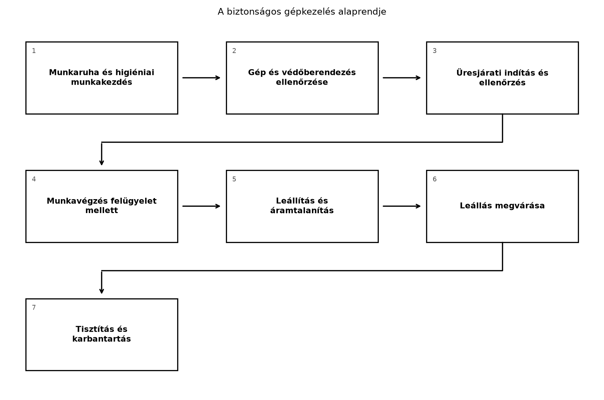

Egy cukrászműhely reggeli termelésében a tanuló a dagasztógép mellett áll. A tészta a horogra tekeredett, és a tanuló ösztönösen benyúlna, hogy levegye a maradékot, miközben a gép lassú fokozaton forog. Az oktató ezt azonnal megállítja, és leállítja a gépet. A jelenet rávilágít arra, hogy a cukrászati gépek hasznosak, de súlyos balesetek forrásai is lehetnek, ha nem ismerjük a veszélyforrásokat, a védőberendezéseket és a biztonságos munkavégzés rendjét. Ebben az alfejezetben ezt a tudást foglaljuk össze, hogy a tanuló ne csak a tésztát, hanem a saját testi épségét is biztonságban tartsa.
Az alábbi folyamatábra a biztonságos gépkezelés alaprendjét mutatja, amelyet minden cukrászati gépi műveletnél megismétlünk.

A folyamat két irányba véd: munka előtt kizárja a hibás géppel való dolgozást, munka után pedig kizárja, hogy tisztítás közben a gép elinduljon vagy a forgó rész még mozogjon.
Definíció. A gép veszélyes zónája az a tér, ahol a gép mozgó alkatrésze, forró felülete vagy elektromos része a dolgozó testét, ruházatát vagy eszközét elérheti, és sérülést okozhat.
A cukrászati gépeken a leggyakoribb mechanikai veszélyek:
Tilos. A gépet védőburkolat nélkül, felemelt retesszel vagy ellenőrizetlen vészleállítóval üzemeltetni. A veszélyes zónába kézzel, spatulával, ruhával benyúlni működés közben tilos.
A cukrászati gépek hőt is közölhetnek vagy hőt vonhatnak el. A hőközlő gépeknél (sütő, olajsütő, csokoládéolvasztó, krémfőző, temperáló) fennáll az égés, forrázás és forró zsiradék kifröccsenésének veszélye. A hűtőgépeknél (fagylaltgép, sokkoló, mélyhűtő) a hideg felület okozhat hidegégést, a hűtőközeg szivárgása pedig ártalmas lehet. A villamos veszély minden elektromos gépet érint: hibás szigetelés, sérült kábel, nedves kéz vagy víz közelsége áramütést okozhat.
Figyelem. Az elektromos gépet soha nem szabad vizes kézzel, vizes padlón bedugni, ki-be kapcsolni vagy tisztítani. A csatlakozódugót mindig a dugaszánál, nem a vezetéknél fogva kell kihúzni. Ha a kábel sérült, a gép füstöl, szikrázik vagy égett szagú, azonnal le kell állítani és áramtalanítani.
Definíció. A védőburkolat olyan rögzített vagy mozgatható szerkezet, amely megakadályozza a veszélyes zóna elérését. A reteszelés olyan kapcsoló, amely a burkolat kinyitásakor megszakítja a gép működését, vagy megakadályozza az indítást, amíg a burkolat nincs a helyén. A vészleállító piros-sárga, kézzel gyorsan elérhető gomb, amely vészhelyzetben azonnal leállítja a gépet.
A leggyakoribb védőberendezések:
| Védőberendezés | Mit véd | Jellemző példa a cukrászatban |
|---|---|---|
| Rögzített burkolat | a forgó szerszámtól, késtől | aprítógép, daráló, keverőtartály fedele |
| Reteszelt mozgó burkolat | a behúzástól, nyírástól | univerzális konyhagép, dagasztógép, tésztanyújtó |
| Vészleállító | váratlan balesettől | sütőszalag, nagy dagasztógép, hajtogatógép |
| Kétkezes indítás | a kéz veszélyes zónába kerülésétől | egyes prések, vágógépek |
| Túlterhelés- és hővédelem | motor leégésétől, tűztől | minden motoros gép |
| Csúszásmentes burkolat, szigetelés | elektromos és mechanikai veszélytől | minden elektromos gép |
Az ábra négy védőberendezést mutat: (1) a rögzített burkolat csak szerszámmal bontható; (2) a reteszelt védőrácsot nyitva a reteszkapcsoló leállítja a gépet; (3) a gomba alakú vészleállító benyomva reteszel és leállít, elfordítva old; (4) kétkezes indításnál a gép csak mindkét gomb egyidejű nyomására működik. A sraffozott terület (5) a veszélyzóna. A HTML-kiadásban a rács nyitása és a vészleállító benyomása kipróbálható: a gép állapota (fut/áll) kiíródik. A reteszelést áthidalni tilos.
Szabály. A védőberendezést nem szabad kiiktatni, leszerelni, rögzíteni vagy átkötni. Ha a burkolat hiányzik, repedt vagy a reteszelés nem működik, a gépet le kell állítani és jelenteni kell. A vészleállító gombot csak vészhelyzetben használjuk; ha benyomtuk, az újraindítás előtt meg kell oldani a probléma okát, és a gombot vissza kell állítani.
Jogszabály. A gépekre az Európai Unióban a gépekről szóló irányelv (2006/42/EK) és annak magyar átültetése vonatkozik; 2027. január 20-tól az (EU) 2023/1230 géprendelet váltja fel az irányelvet (ellenőrizendő: a pontos magyar rendelet száma, az alkalmazási dátum és az átmeneti szabályok). A CE-jelölés azt jelzi, hogy a gyártó szerint a gép megfelel az egészségvédelmi és biztonsági alapkövetelményeknek. A kezelési utasítás tartalmazza a biztonságos üzembe helyezés, használat, karbantartás és tisztítás feltételeit, a maradék kockázatokat és a tiltott felhasználásokat. A munkáltató köteles a gépet a kezelési utasítás szerint üzemeltetni, és a dolgozót a gép biztonságos használatára oktatni (ellenőrizendő: a munkavédelmi törvény és a munkaeszközökre vonatkozó külön jogszabály pontos előírásai).
Megjegyzés. A gép magyar nyelvű kezelési utasítását a műhelyben elérhető helyen kell tartani. Ha a gép használt, hiányzó vagy idegen nyelvű utasítással érkezik, a munkáltatónak gondoskodnia kell a magyar nyelvű tájékoztatásról és oktatásról.
Szabály. Gépi munkát csak azután kezdhetünk, ha az alábbi ellenőrzéseket elvégeztük:
Ha bármelyik ellenőrzés nem megfelelő, a gépet tilos elindítani, és jelenteni kell az oktatónak vagy a műszakvezetőnek.
A hibás képen a gép jár, a rács nyitva van, a spatula az üstben, a ruhaujj laza és a haj szabadon lóg a forgó szerszám mellett. A helyes sorrend: (3) leállítás és áramtalanítás, (4) megvárjuk a szerszám teljes megállását, (5) kinyitjuk a rácsot, (6) szilikon spatulával lekaparjuk a masszát; utána a rácsot zárjuk, és a legkisebb fokozaton indítunk újra.
Biztonsági korlát. A gépi művelet tanműhelyi vagy üzemi környezetben, oktatás után és felügyelet mellett végezhető; otthon háztartási géppel, kis adagban gyakorolj. 18 év alatti tanuló egyes gépeken (pl. hengergép, darálógép) csak a jogszabályban meghatározott feltételekkel, gyakorlati oktatás keretében, közvetlen felügyelet mellett dolgozhat, vagy egyáltalán nem (ellenőrizendő: a fiatal munkavállalók foglalkoztatására vonatkozó munkavédelmi szabályok és a szakképzési törvény).
Szabály. Tisztítás, burkolatbontás, szerszámcsere vagy elakadás megszüntetése előtt:
Figyelem. A beragadt tésztát, krémet vagy masszát fém- vagy műanyag spatulával, nem kézzel vagy ruhával távolítsuk el. A pengéket, vágószerszámokat vágásálló kesztyűvel vegyük ki, de forgó gép közelében kesztyűt viselni tilos, mert behúzhatja.
A tanuló munka előtt és után ellenőrizze az univerzális konyhagépet, és biztonságos rendben használja a habverő fejet tejszínhab felveréséhez.
Univerzális konyhagép habverő fejjel, rozsdamentes keverőtál, 300 g hűtött tejszín, tisztítókendő, fertőtlenítő szer, spatula.
Higiénia. Munkaruha, hajháló, ékszerek levétele, alapos kézmosás. A gép és a munkafelület tiszta, fertőtlenített. A tejszín hűtőből érkezett, csomagolása sértetlen, felhasználhatósági ideje megfelelő.
Biztonsági korlát. A gépi művelet tanműhelyben, oktatás után és oktatói felügyelet mellett végezhető. Otthon háztartási géppel, kis adagban gyakorolj. 18 év alatti tanuló egyes gépeken (pl. hengergép, darálógép) csak a jogszabályban meghatározott feltételekkel, gyakorlati oktatás keretében, közvetlen felügyelet mellett dolgozhat, vagy egyáltalán nem (ellenőrizendő: a fiatal munkavállalók foglalkoztatására vonatkozó munkavédelmi szabályok és a szakképzési törvény).
| Ellenőrzési tétel | Követelmény | Ellenőrzés módja | Ha nem megfelelő |
|---|---|---|---|
| Csatlakozóvezeték és dugó | Sértetlen, nem repedt | Szemrevételezés | Gépet ne indítsuk el |
| Védőburkolat és retesz | Zárva, retesz működik | Nyitáspróba: a gép nem indul nyitott burkolattal | Jelenteni, javításig letiltani |
| Vészleállító | Elérhető, működik | Benyomás- és kireteszelés-próba üresjáratban | Jelenteni |
| Habverő fej | Rögzült, nem repedt | Kézzel rögzítés ellenőrzése álló gépnél | Cserélni |
| Munkatér | Száraz, tiszta, jól megvilágított | Szemrevételezés | Takarítás, rendrakás |
Allergének. A gép által feldolgozott tej, tojás, glutén- vagy diófélék maradékot hagyhatnak a tálban és a szerszámon. A tisztításnak el kell távolítania a látható maradékot, hogy a következő termék ne szennyeződjön keresztszennyeződéssel.
Kritikus pont. A gép tisztítás előtti áramtalanítása és a leállás megvárása a legfontosabb biztonsági kritikus pont. Ha ezt elmulasztjuk, a forgó szerszám súlyos sérülést okozhat.
A gép biztonsági állapotát ugyanúgy ellenőrizni kell, mint a termék minőségét. Az ellenőrzés szempontjai:
Ha a gép bármely szempontból nem megfelelő, azt le kell állítani, és a hibát jelenteni kell. A javítás nem a tanuló feladata.
Hiba 1: A védőburkolatot nyitva hagyják vagy kiiktatják. - Tünet: a gép nyitott burkolattal is elindul, vagy a reteszt kiiktatták. - Ok: időmegtakarítás, megszokás, „úgysem nyúlok bele” gondolkodás. - Megelőzés: napi ellenőrzés, a reteszelés tesztelése. Javítani csak a gép letiltásával lehet; a kiiktatott reteszt vissza kell állítani.
Hiba 2: Tisztításkor a gép csatlakoztatva marad. - Tünet: a dolgozó a forgó szerszámot vagy a tálat áram alatt mossa, a dugó a konnektorban marad. - Ok: kényelem, a kikapcsolást elegendőnek gondolják. - Megelőzés: tisztítás előtt mindig a dugó kihúzása; a műveletet felügyelő is ellenőrizze. A kikapcsolt gép is váratlanul elindulhat hiba esetén.
Hiba 3: A beragadt tésztát ujjal, működő gépnél távolítják el. - Tünet: a dolgozó a dagasztóhorogról vagy a hengerről kézzel szedi le a tésztát. - Ok: reflexszerű mozdulat, a lassú fokozat félreértése. - Megelőzés: leállítás és áramtalanítás, majd spatula használata. A lassú fokozat is okozhat súlyos sérülést.
Hiba 4: Forró felületet puszta kézzel érintenek. - Tünet: égési sérülés a temperáló edényén, a tésztanyújtó hengerén vagy a krémfőző üstjén. - Ok: a védőkesztyű hiánya vagy a gép hőmérsékletének alábecsülése. - Megelőzés: hőálló kesztyű használata, a forró felület megjelölése, a lehűlés kivárása.
Valós eset. A tanuló az univerzális konyhagépet akarja elindítani, de az nem indul, pedig a főkapcsoló „be” állásban van. A kollégája ránéz, és észreveszi, hogy a tál fedele nincs pontosan a reteszbe akasztva.
Tünet: a gép nem indul, esetleg a retesz kapcsolója nem kattan.
Hipotézisek és ellenőrzésük sorrendben:
Ok: a legtöbb esetben a burkolat nincs rendesen lezárva, vagy a vészkapcsoló benyomva maradt. Javítás: az ok megszüntetése után a gép újraindítható. Megelőzés: munka előtt mindig ellenőrizni a burkolat reteszét és a vészkapcsolót.
1. feladat (A): Sorold fel a cukrászati gépek négy
mechanikai veszélyét, és adj mindegyikhez egy gépi példát!
2. feladat (A): Magyarázd meg röviden a CE-jelölés és a
kezelési utasítás szerepét a gépbiztonságban!
3. feladat (B): Írj öt lépésből álló ellenőrző listát a
munka előtti gépellenőrzéshez!
4. feladat (B): A gyakorlati útmutatóban szereplő
univerzális konyhagép nem indul. Sorold fel a lehetséges okokat a
legegyszerűbbtől a bonyolultabbig!
5. feladat (C): Elemezd a következő esetet: a dolgozó a
tésztanyújtó hengerei közé akadt tésztát kézzel akarja eltávolítani,
mert a gép „csak lassan forog”. Milyen veszélyeket lát? Milyen
lépésekkel végezné el a műveletet biztonságosan?
6. feladat (D): Válassz egy gépet a tanműhelyben
(például dagasztógép, habverőgép vagy tésztanyújtó). Tölts ki egy
egyszerű gépbiztonsági ellenőrző lapot a gyakorlati
útmutató táblázata alapján, majd végezd el a munka előtti és tisztítás
utáni ellenőrzést. Az értékelési szempontok: minden tételt ellenőriztél,
a hibás tételeket jelölted, a dokumentációt kitöltötted, és a műveletek
sorrendje biztonságos volt.
1. feladat (A). Mechanikai veszélyek:
- Behúzás – tésztanyújtó hengerei.
- Nyírás – daráló, aprító kések.
- Zúzás – tésztanyújtó vagy prés.
- Forgó szerszám – dagasztóhorog, habverő.
2. feladat (A). A CE-jelölés azt jelzi, hogy a gép a
gyártó szerint megfelel az uniós biztonsági előírásoknak. A kezelési
utasítás megadja a biztonságos üzemeltetés, tisztítás és karbantartás
feltételeit, a maradék kockázatokat és a tiltott műveleteket.
3. feladat (B). Munka előtti ellenőrző lista:
1. Csatlakozóvezeték és dugó sértetlensége.
2. Védőburkolatok és retesz működése.
3. Vészleállító elérhetősége és működése.
4. Kapcsolók, szerszámok, tálak megfelelő rögzítése.
5. Üresjárati indítás, majd a gép leállítása.
4. feladat (B). Lehetséges okok sorrendben:
1. A csatlakozó nincs bedugva vagy a konnektor hibás.
2. A vészleállító benyomva maradt.
3. A burkolat vagy a tál nincs a reteszben.
4. A túlterhelésvédelem kioldott (motor meleg).
5. Meghibásodott retesz- vagy főkapcsoló.
5. feladat (C). Veszélyek: a henger behúzza a kezet
vagy a ruhát, a „lassú” fokozat is súlyos ujj- vagy csontsérülést
okozhat. Biztonságos lépések: leállítás, áramtalanítás, leállás
megvárása, majd spatulával eltávolítás, és a gép csak ezután indítható
újra.
6. feladat (D). Az értékelés során a tanuló lapján
ellenőrizni kell, hogy minden tétel (kábel, burkolat, retesz,
vészleállító, szerszámrögzítés, üresjárat) szerepel, a hibákat jelölte,
és a tisztítás előtt áramtalanított. A biztonságos sorrend betartása
esetén a feladat teljesítettnek tekinthető.
A cukrászati gépek veszélyes zónái a mozgó szerszámok, a hengerek, a kések és a forró felületek körül alakulnak ki. A mechanikai veszélyek közé tartozik a behúzás, nyírás, zúzás, forgó szerszám, kirepülő tárgy és becsípődés. A termikus és villamos veszélyek égést, forrázást, hidegégést és áramütést okozhatnak. A munka előtt mindig ellenőrizni kell a csatlakozóvezetéket, a védőburkolatot, a reteszelést, a vészleállítót, majd üresjáratban indítani a gépet. Tisztítás és szerszámcsere előtt áramtalanítani kell, kihúzni a dugót, és megvárni a teljes leállást; beragadt anyagot csak spatulával szabad eltávolítani. Védőburkolatot kiiktatni, áram alatt tisztítani vagy működő gépbe nyúlni tilos. A CE-jelölés és a kezelési utasítás a biztonságos használat feltételeit rögzíti. A tanuló gépi munkát csak oktatás után és felügyelet mellett végezhet; fixen bekötött gépnél a főkapcsolót lezárjuk és kitáblázzuk, 18 év alatti tanulóra a fiatal munkavállalók külön szabályai vonatkoznak.
Továbbvitt eredmény. A gépi munka biztonsági rendje – munkaruha, védőberendezés-ellenőrzés, felügyelet, áramtalanítás, leállás megvárása, spatulás eltávolítás – minden későbbi gyakorlati útmutató elején megismétlődik, különösen a Sós töltelékek és a töltelékkészítés balesetvédelme, a Gyúrt és kevert élesztős tészták: briós, kalács, kuglóf, fánk és a Vajas és leveles tészta: mechanikai lazítás és hajtogatás alfejezetekben.